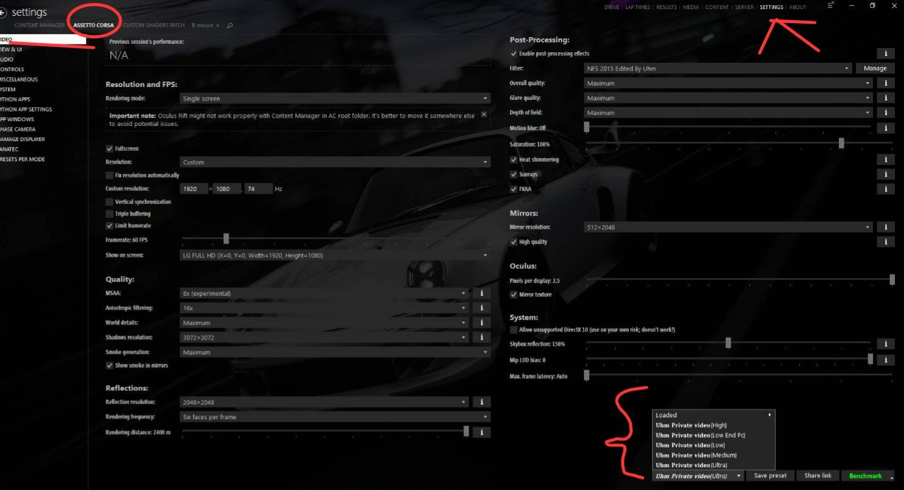

5 · Video Setting
نصب Video Settings
پریست ویدیو را در Content Manager کپی و اعمال کنید.
-
1
کپی فایل Video Settings
فایل Video Settings را در مسیر زیر کپی کنید:
C:\Users\نام کاربری ویندوز\AppData\Local\AcTools Content Manager\Presets\Video Settingsنام کاربری ویندوز را با اکانت خود جایگزین کنید.
-
2
اعمال در Content Manager
وارد Content Manager شوید و مسیر زیر را باز کنید:
SETTINGS → Assetto Corsa → Video
در پایین سمت راست از لیست Presets یکی از نسخههای Uhm Private video را انتخاب کنید (Low End / Low / Medium / High / Ultra).

انتخاب پریست ویدیو SETTINGS → ASSETTO CORSA → VIDEO و از پایین: Uhm Private video